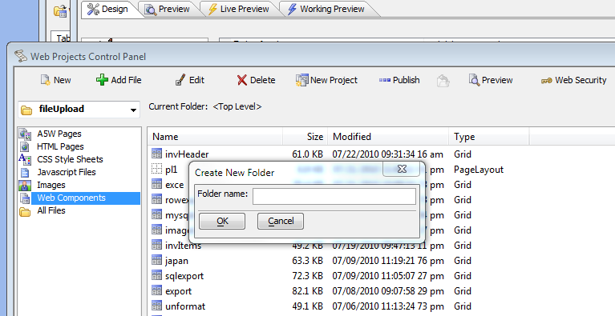

Publish multiple web projects and use subfolders
If multiple projects are published to the same Application Server (such as often done in development) they have to be published to discrete folders under webroot to segregate the projects. This is done by giving each project a unique target folder in the publish profile
There is no problem with different projects being in subfolders under webroot
C:\A5Webroot\project1
C:\A5Webroot\Project2 etc�.
That works fine. In fact, it is a very common setup during development to keep test projects separated. Project1 has a target folder of "project1" and project2 has its target folder as "project2". The web security is isolated by the unique folders. The web security in "C:\A5Webroot\project1" will only be applied to pages and components in that folder and any folder underneath that folder.
If you publish project1 to the target folder of " project1" as above and the webroot is set to C:\A5Webroot, a URL for an index page in project1 would be
localhost/project1/index.a5w
If a url is entered as
localhost/index.a5w
The server will see that as a different application and a 403 error will be generated.
Putting a project in a subfolder under another project won't work.
C:\A5Webroot\project1
C:\A5Webroot\project1\project2
In that case, security, path aliases, and file locations between the projects may get confused. The application server finds the values from the "lowest" folder in a path, so it would find the information for "project2" and project 2 may work. But project1 will use the values from project2, which won't work.
If a project is being published to a server and it is the ONLY project running on that server, publishing directly to webroot is common.
Subfolders in a single project
Some developers want to break a project into multiple subfolders. This won't work in most cases for a variety of reasons. For example, the project parent folder contains pages and is published to a target folder of "project1"
C:\A5Webroot\project1
The URL for and index page in the main project folder would be
localhost/project1/index.a5w
The desire is to create a subfolder named "administration" under the project folder. Pages in this folder would end up in
C:\A5Webroot\project1\administration
However, that won't work as AJAX grids only work on pages in the parent (top level) folder. The application server will find the security, path aliases, and file locations from the settings in the folder "project1" as there is no information in "project1\administration". The data used is in the folder identified as the application root for the project, which is the top level folder for the project. In the example above that is " C:\A5Webroot\project". But any paths relative to the application root may be incorrect, leading to unpredictable behaviour.
You can put non-Ajax files and pages in a subfolder like "administration" such as html pages, images, PDF documents etc. In that case, you have to open page security and set security on the sub-folder or on the individual files, or set a file type as always allowed.
The number of files in a published project folder won't impact anything. Projects with over 300 pages in a single folder are not uncommon. The only concern is the naming convention to keep them organized in a single folder
